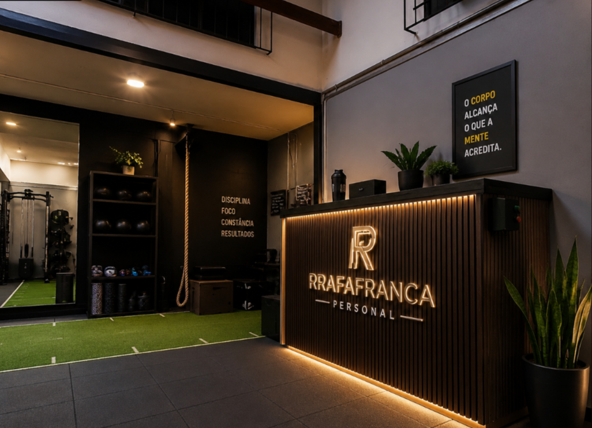
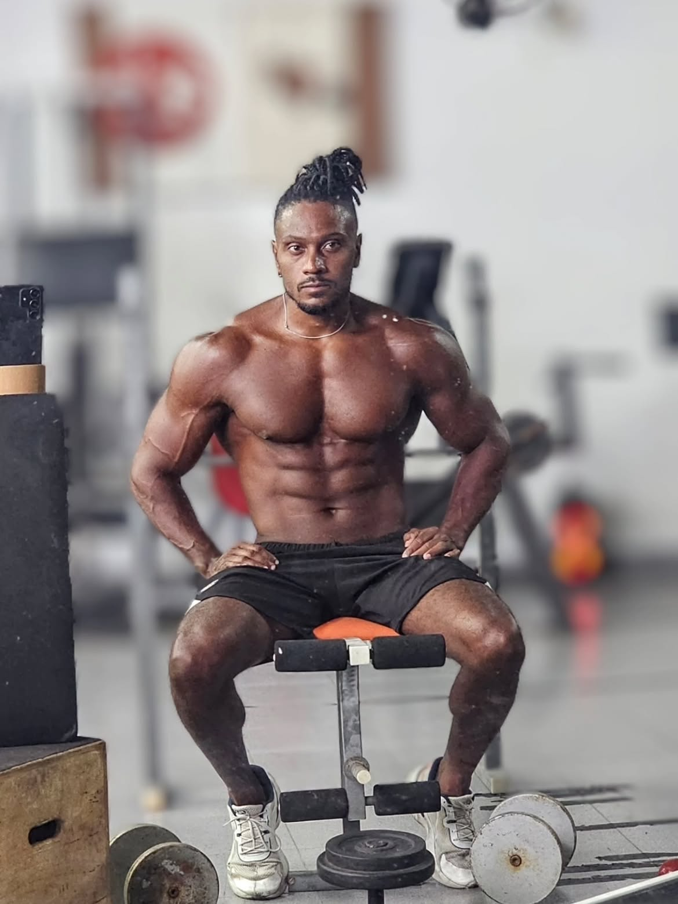
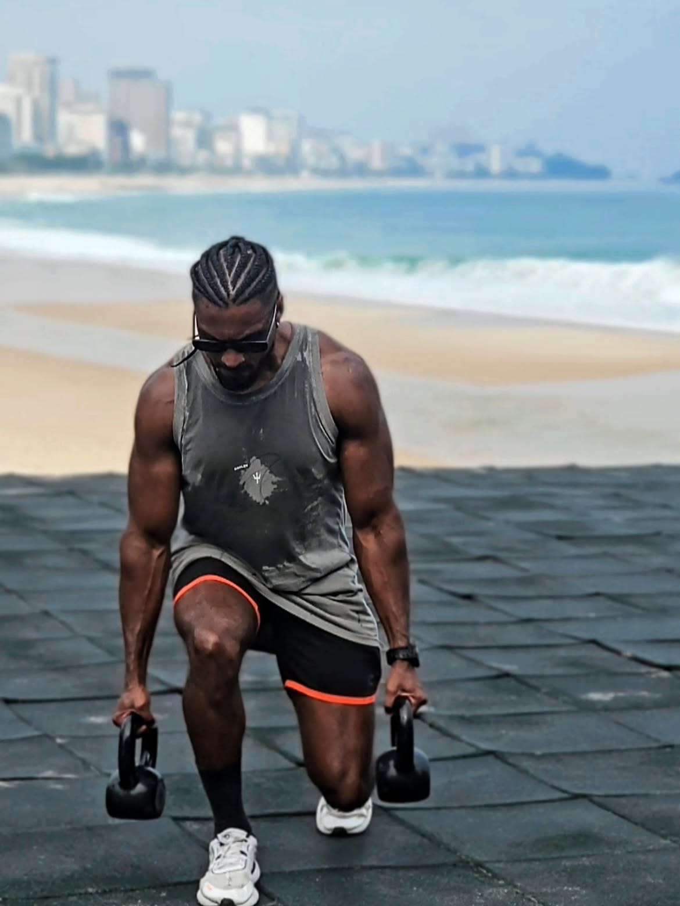
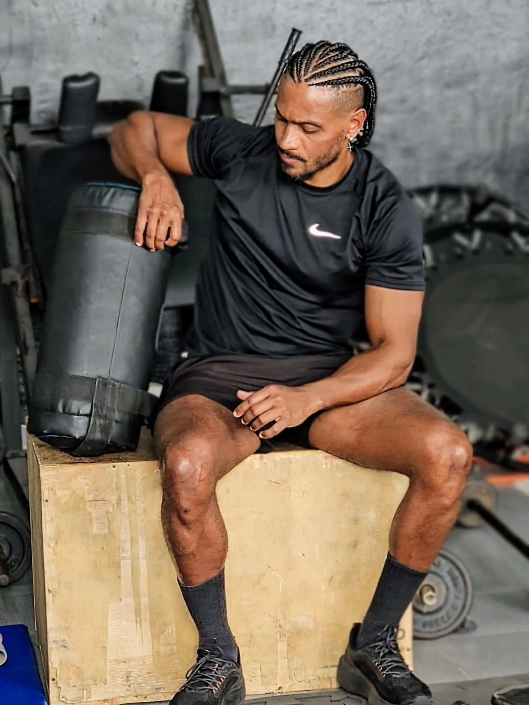

Estúdio de treinamento em Vila da Penha, com turmas pequenas e treino montado pra sua realidade. Sem catraca, sem fila de aparelho, sem se sentir perdido no meio de duzentas pessoas.
Rafael França — Profissional de Educação Física, CREF 068759.
Graduado pela Unicesumar e estudante de Fisioterapia.

As quatro palavras estão pintadas na parede do estúdio. Não são slogan — são a ordem em que as coisas acontecem aqui.
Muita gente já tentou academia e desistiu. Não porque é preguiçosa — porque ninguém olhou pra ela. Um estúdio funciona no caminho contrário.
Quatro caminhos diferentes dentro do mesmo estúdio. Na primeira conversa a gente descobre qual é o seu.
Trabalho de corpo inteiro com movimentos que aparecem na sua vida real: levantar peso do chão, subir escada sem perder o fôlego, brincar com o filho sem travar a lombar no dia seguinte.
Pra quem quer voltar a se mover bem
Condicionamento com base em luta. Saco, luva, deslocamento e explosão. Queima absurda de calorias, cabeça mais leve no fim do dia e um jeito de treinar que não deixa você olhar pro relógio.
Pra quem enjoa fácil de treino repetitivo
Hipertrofia e força com progressão registrada. Carga que sobe quando tem que subir, técnica cobrada em cada repetição e um plano que muda conforme o seu corpo responde.
Pra quem quer ganhar músculo de verdade
Para quem tem muito peso a perder e já tentou de tudo. Começa de onde você está hoje, no seu ritmo, com carga que respeita joelho e coluna. É o trabalho que mais dá resultado aqui dentro.
Pra quem quer mudar de vida, não só de número


Conta o que você quer, como está sua rotina hoje e se tem alguma limitação. Quem responde é o Rafael, não um robô.
Você conhece o espaço, faz a avaliação e já sai sabendo o plano: o que treinar, quantas vezes por semana e o que esperar de cada mês.
Horário fixo, professor junto e ajuste toda vez que o corpo pedir. Sem contrato amarrado, sem letra miúda.
Esses números são de alunas que treinaram nesse estúdio. Nenhuma delas começou em forma — todas começaram do zero, num dia qualquer, do mesmo jeito que você pode começar.
“Foi um ano de esforço pessoal, uma luta, e eu fui o meu próprio oponente.”Aluna do estúdio, sobre o processo que terminou com 53 quilos a menos
O corpo alcança o que a mente acredita.Quadro na recepção do estúdio

Sou o Rafael França, profissional de Educação Física formado pela Unicesumar e estudante de Fisioterapia. Trabalho com treino personalizado há anos aqui na Zona Norte, e abri esse estúdio pra fazer do meu jeito: turma pequena, atenção de verdade e treino que respeita o corpo de quem chega.
A Fisioterapia entrou na minha vida exatamente por isso. Boa parte de quem me procura chega com dor no joelho, na lombar, no ombro — e com medo de piorar. Meu trabalho é te fazer treinar forte sem te machucar.
Se você já desistiu antes, tudo bem. Aqui o começo é do tamanho que você aguenta hoje.
Vila da Penha, Rio de Janeiro. Se você conhece o Carioca Shopping, você já sabe chegar.
O mapa está centrado no Carioca Shopping. Assim que o endereço exato for confirmado, o pino vai direto na porta do estúdio.
Vai. A maior parte das pessoas que treina aqui começou exatamente assim, sem condicionamento nenhum. O treino do primeiro dia é montado pro corpo que chegou, não pro corpo que você quer ter em um ano. E você não fica sozinho em nenhum momento.
[Responder aqui: aceita, não aceita, ou está em processo de credenciamento.] Essa pergunta aparece com frequência, então vale deixar a resposta clara logo na primeira linha.
O valor muda conforme a frequência semanal e a modalidade que faz sentido pra você. Por isso o combinado é rápido: você manda mensagem, conta seu objetivo e sua disponibilidade, e recebe o valor exato do seu plano — sem enrolação e sem taxa escondida.
Aqui o horário é marcado. É exatamente isso que garante espaço livre, equipamento disponível e o professor com você. [Ajustar caso exista horário livre em algum período.]
Na maioria dos casos, sim — e treinar do jeito certo costuma ser parte da solução. Você conta o que sente na avaliação, o treino é adaptado e a execução é corrigida em tempo real. Se houver indicação médica específica, ela é respeitada.
Não. O estúdio atende homens e mulheres, e tem gente aqui buscando coisas bem diferentes: perder peso, ganhar músculo, melhorar o condicionamento ou simplesmente parar de sentir dor. O que muda é o plano, não o cuidado.
Dá pra construir resultado com duas ou três sessões semanais bem feitas. O que não funciona é treino aleatório, sem progressão e sem constância — e é justamente isso que o acompanhamento resolve.
Preenche em trinta segundos. A mensagem chega pronta no WhatsApp do Rafael com tudo que ele precisa saber pra te responder já com o plano e o valor.